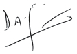

The pace of change in a technology-driven business is rapid and convergence of voice, data and entertainment paves the footprint of the future. Together with mobile technology, the Internet of Things and smart cities concepts will mature to provide platforms of what we are about to experience. Though definitely exciting, as in any transformative technology, we also need to know how to manage the flipside.
SLT is actively pursuing global trends in telecommunications technology while investing for growth, building its employee capital and expanding its presence in international communications. The year under review saw solid results on all these fronts.
We realigned our organisation structure to meet the strategic direction of our core ICT business with SLT delivering fixed ICT operations and mobile ICT operations through our fully-owned subsidiary Mobitel (Private) Limited. Strategic plans are being implemented along with delegated authority and accountability at top levels of the structure. They are underpinned by SLT’s ‘centres of excellence’ built on four pillars - planning, sales, network operations and service delivery.
We forged a marketing alliance between SLT and Mobitel to jointly drive our ICT business by leveraging each other’s brand equity and cross selling complementary products and services through ‘packages’.
Two important projects are being implemented to complement our strategic direction. The enterprise resource planning (ERP) project launched in 2015 will go commercially live in Q3 2016. It is intended to seamlessly integrate the supply chain, inventory, finance, accounting, projects, assets, human resources, training, planning and reporting functions. Together with the ERP project we launched a customer relationship management (CRM) project, which will go commercially live in Q4 2016 for retail customers and in Q2 2017 for corporate customers.
Several other initiatives aimed at process upgrades and enhancements were executed during the year, notably in the areas of business process re-engineering and IT.
We invested Rs. 21.8 billion in our ICT business during the year, with fixed ICT operations accounting for 80% of the total.
SLT’s Rs. 5.2 billion investment in the new SEA-ME-WE 5 submarine cable system connecting South East Asia, Middle East and Western Europe is a milestone project that is due for completion in 2016. This 20,000 km cable with a 24 Tbps design capacity will make the country and SLT future-ready to take on the coming data ‘explosion’. Further, the envisaged full landing station on Sri Lankan soil will pave the way for the establishment of a global point of presence (PoP) in Sri Lanka in the near future.
Other significant investments include the setting up of SLT’s PoP in Singapore for improved reliability and the ongoing expansion of SLT’s 100 Gbps national backbone network.
By way of new products, the launch of ‘Smartline’ for superfast fibre optic broadband services and the establishment of the cloud platform ‘Akaza’ are noteworthy. We set up the Mobitel Innovation Centre at Trace Expert City Colombo that supports an eco system driven by science, technology and innovation.
We employed a total of 9,331 persons in our ICT business by end 2015, with fixed ICT operations accounting for 85% of the total. Going beyond investing in networks and assets, we continue to invest in our people by providing them training, skills and support to deliver superior service and solutions to our customers. This was reinforced through a programme of change management across all grades of employees that will support our strategic direction and the ongoing ERM and CRM projects. Going beyond our business boundary, employees engage with and support local communities in many ways through volunteerism, while the SLT Group provides the financial backing where needed for the CSR initiatives.
SLT and the Group posted revenue growths of 4.1% and 4.6% respectively over the previous year, while operating profits grew at 6.5% and 18.9% respectively. While these are commendable results achieved in a competitive environment, they did not translate into bottom line growths in terms of profitability, primarily due to the unprecedented 9% depreciation of the Sri Lanka rupee during the year which impacted on our foreign currency borrowings. The internally generated foreign currency inflows could not fully neutralise this. In response, we have taken a closer look at our risk management system, appointed a Group treasury committee and are reducing our dollar denominated borrowings.
We have weathered many a storm in the past 150 years and more as a pioneer and trailblazer in ICT in Sri Lanka. We face the future with confidence and commit ourselves to deliver the full benefits of broadband connectivity to all Sri Lankans whilst continuing to deliver significant direct as well as indirect contributions to the Sri Lankan economy.
Dileepa Wijesundera
Group Chief Executive Officer
29 March 2016